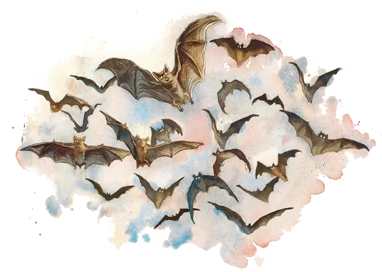

Рой летучих мышей
Swarm of Bats
Средний рой крошечных Зверей, без мировоззрения

Класс Доспеха 12
Хиты 22 (5к8)
Скорость 0 футов, летая 30 футов
| мод | спас | ||
|---|---|---|---|
| СИЛ | 5 | −3 | −3 |
| ЛОВ | 15 | +2 | +2 |
| ТЕЛ | 10 | +0 | +0 |
| мод | спас | ||
|---|---|---|---|
| ИНТ | 2 | −4 | −4 |
| МДР | 12 | +1 | +1 |
| ХАР | 4 | −3 | −3 |
Сопротивление урону дробящий, колющий, рубящий
Иммунитет к состояниям сбивание с ног, паралич, ошеломление, очарование, опутанность, окаменение, испуг, захват
Чувства слепое зрение 60 футов, пассивное Восприятие 11
Опасность 1/4 (50 опыта)
Бонус мастерства +2
Среда обитания Город, Горы, Подземье, Холмы
Особенности
Эхолокация. Рой не может использовать слепое зрение, будучи оглохшим.
Острый слух. Рой совершает с преимуществом проверки Мудрости (Восприятие), полагающиеся на слух.
Рой. Рой может занимать пространство другого существа, и наоборот, и рой может перемещаться через любой проход, достаточный для Крохотной летучей мыши. Рой не может восстанавливать хиты и получать временные хиты.
Действия
Укусы. Рукопашная атака оружием: +4 к попаданию, досягаемость 0 футов, одно существо в пространстве роя. Попадание: Колющий урон 5 (2к4), или колющий урон 2 (1к4), если у роя половина хитов или меньше.
Описание
См. дополнительно статью: "Бестиарий: Рои существ"